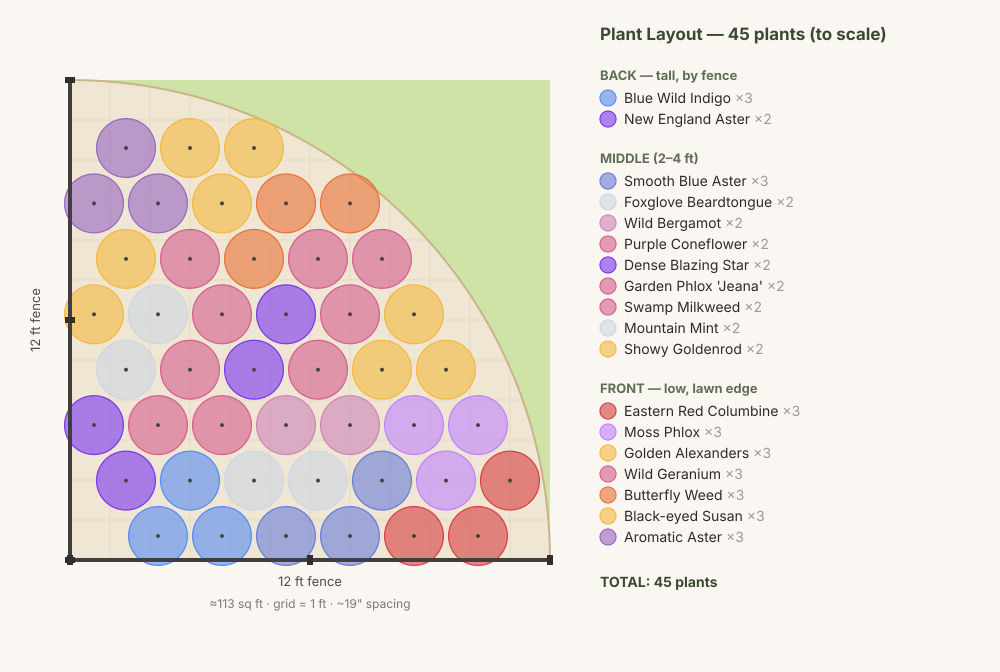

A native pollinator bed for the sunny southwest corner of your fenced yard — designed for continuous bloom from spring through fall and built around monarch host plants so the family can watch caterpillars and chrysalises all season. Here's the plan, season by season.
Planting Plan
A C-shaped bed hugging the corner — tallest plants against the fence, stepping down to low edgers along the curved front edge that faces the lawn. Each numbered dot is a drift of 3–7 plants.

Conditions
Bloom Through the Seasons
Tap a season to see what's in bloom, emerging, or going to seed across the whole bed.
Plant Palette
All native to Eastern PA, chosen for pollinator value and overlapping bloom. Arranged by height, from the tall corner anchors to the low front edge.


.jpg)


Soil & Care
Amend the whole bed, not single holes. Clay holds water and compacts. Loosen the top 10–12" across the entire footprint and work in 3–4" of compost. Digging good soil into one hole in clay creates a "bathtub" that drowns roots.
One dry pocket for butterfly weed. It wants sharp drainage and resents wet clay — give it the highest, sandiest spot (add a little grit). Swamp milkweed goes in the lower, damper area instead, so monarchs get host plants in both zones.
Plant in drifts. Cluster each species in groups of 3–7 rather than dotting them around — it reads better and pollinators forage it more efficiently. Spacing roughly equals each plant's mature spread.
Best timing & first-year care. Early fall or spring is ideal. Water deeply 1–2× per week until established. Leave stems and seedheads standing over winter — they feed birds and shelter native bees — then cut back in early spring. Check milkweed leaves for monarch caterpillars before any cleanup.
Spring · Summer · Fall
Illustrations of how the bed will fill in and bloom across the seasons — showing only the flowers actually in bloom at that time.

Early color from columbine, moss phlox, golden alexanders, and wild geranium, with blue wild indigo and beardtongue opening as spring turns to summer.

Peak bloom — bee balm, purple coneflower, blazing star, garden phlox, both milkweeds, and mountain mint in purples, pink, and orange. Prime monarch season.

Late nectar from New England aster, smooth blue aster, aromatic aster, showy goldenrod, and black-eyed Susan — purple, blue, and gold carrying color right to frost.